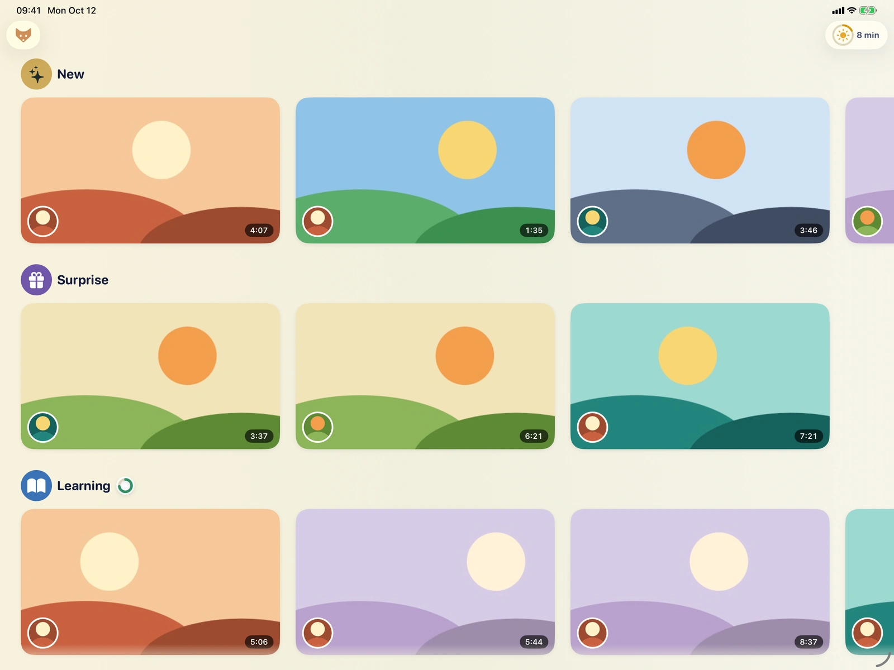

YouTube-Player mit Elternkontrolle für dein Kind auf dem iPad
Tubik läuft auf iPad und iPhone, mit denselben freigegebenen Kanälen, Kategorien und Zeitbudgets und einem Layout für den größeren Bildschirm. Tubik ist eine unabhängige App und steht in keiner Verbindung zu YouTube oder Google.

Für den größeren Bildschirm gemacht

Auf dem iPad sieht dein Kind Reihen von Videos, nach Kategorien gruppiert. Im Elternbereich nutzt Tubik den Platz für eine Seitenleiste, und die App funktioniert im Hoch- und Querformat.
Dieselben Elternfunktionen
Du gibst Kanäle frei, ordnest sie Kategorien zu und legst ein Tageslimit und ein Budget pro Kategorie fest, genau wie auf dem iPhone. Der Elternbereich liegt hinter einer PIN.
Gut zu wissen
Die Videos laufen im offiziellen YouTube-Player, der eigene Werbung oder Einblendungen zeigen kann. Tubik begrenzt die Zeit in Tubik; für Limits auf dem ganzen iPad nutzt du die Bildschirmzeit in den Einstellungen.
Häufige Fragen
Brauche ich eine eigene iPad-App?
Nein. Tubik ist eine App für iPhone und iPad.
Funktioniert es im Querformat?
Ja. Tubik funktioniert auf dem iPad im Hoch- und Querformat.